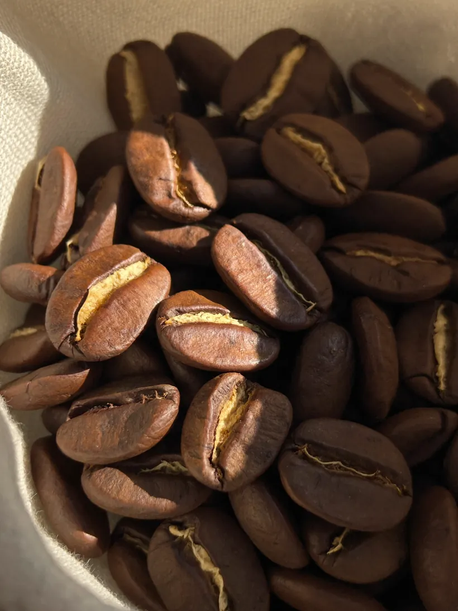

One — the bean
It starts as fruit.
Every bean in that cup was the seed of a small red fruit, picked by hand on a hillside high enough that the nights stay cold and the cherry takes its time about ripening. We buy from three farms and we name all three. Nothing here is a blend of whatever was cheap that month.
The roast
We roast in twelve-kilo batches on the Tuesday before we ship, and we stop earlier than most: far enough in to lose the grassiness, not so far that everything on the table tastes of the roaster instead of the farm. What arrives is brown, not black.
